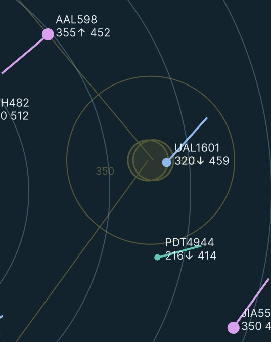
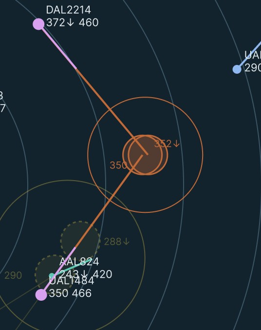
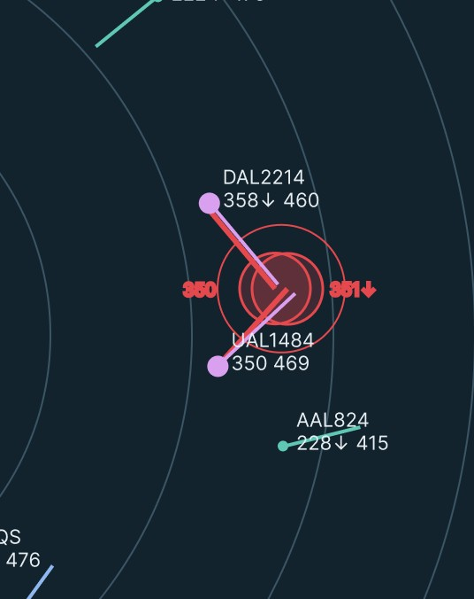

Configural Conflict Display for Air Traffic Control
An animated en-route radar scope built from real flight data around Washington, D.C. Two converging aircraft form one shape that grows from yellow to red as a loss of separation becomes likely, warning up to 7 minutes ahead, compared with about 2.5 minutes for ERAM’s Conflict Alert.
Human Factors of Visual Display Systems, Fall 2026